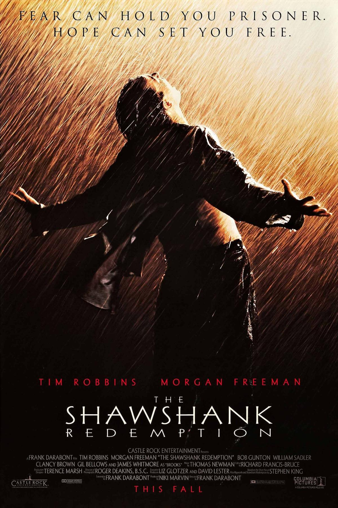

<!doctype html>
<html lang="en">
  <head>
    <meta charset="utf-8" />
    <meta name="viewport" content="width=device-width, initial-scale=1" />
    <title>Netflix UX Prototype — Shawshank Hover</title>
    <meta name="description" content="Prototype of Netflix hover UX with evaluative summary and uncensored comment window." />
    <!-- Tailwind via CDN -->
    <script src="https://cdn.tailwindcss.com"></script>
    <!-- Preload your poster for snappier paint -->
    <link rel="preload" as="image" href="photo.jpg" />
  </head>
  <body class="bg-neutral-950">
    <div id="root"></div>

    <!-- React / ReactDOM (UMD) -->
    <script src="https://unpkg.com/react@18/umd/react.development.js" crossorigin></script>
    <script src="https://unpkg.com/react-dom@18/umd/react-dom.development.js" crossorigin></script>

    <!-- Babel compiles JSX in the browser -->
    <script src="https://unpkg.com/@babel/standalone/babel.min.js"></script>

    <!-- App (inlined JSX) -->
    <script type="text/babel">
      const { useMemo, useState } = React;

      // Uncensored Window (inclusive 95–100)
      const UNLOCK_START = 95;
      const CREDITS_START = 100;

      function detectSpoiler(text) {
        const spoilerWords = [
          /ending/i, /final\s+scene/i, /twist/i, /escape/i, /tunnel/i,
          /poster/i, /warden/i, /parole/i, /library\s+incident/i, /letter\s+under\s+the\s+stone/i,
        ];
        return spoilerWords.some((r) => r.test(text));
      }

      function classNames(...xs) { return xs.filter(Boolean).join(" "); }

      const seedComments = [
        { id: 1, author: "film_critic93", text: "Tim Robbins and Morgan Freeman carry this with quiet power. Hope, dignity, friendship — still hits.", createdAt: "2025-08-02T18:12:00Z" },
        { id: 2, author: "nostalgia_nate", text: "The rooftop scene is pure cinema. You can almost feel the breeze and taste the beer — simple grace.", createdAt: "2025-08-11T03:40:00Z" },
        { id: 3, author: "cinephile42", text: "Overrated to me — sentimental, predictable, and pretty traditional formally. Still very watchable.", createdAt: "2025-08-13T12:00:00Z" },
        { id: 4, author: "plotTalker", text: "That escape behind the poster and the tunnel reveal — legendary payoff to all that quiet setup.", createdAt: "2025-08-15T20:15:00Z" },
        { id: 5, author: "library_lover", text: "Red's voiceover is the heartbeat. The cadence, the reflections — it gives the story its soul.", createdAt: "2025-08-20T09:25:00Z" },
        { id: 6, author: "techie_take", text: "Impactful themes on institutional cruelty and compassion. But it's hardly innovative technically.", createdAt: "2025-08-21T11:05:00Z" },
        { id: 7, author: "endingEnthusiast", text: "The ending on the beach — from the letter under the stone to the reunion — cathartic and beautiful.", createdAt: "2025-08-24T22:42:00Z" },
      ];

      function App() {
        const [hovered, setHovered] = useState(false);
        const [progress, setProgress] = useState(30);
        const [spoilerFilterOn, setSpoilerFilterOn] = useState(true);
        const [activeTab, setActiveTab] = useState("public");
        const [comments, setComments] = useState(() =>
          seedComments.map((c) => ({ ...c, containsSpoiler: detectSpoiler(c.text) }))
        );
        const [draft, setDraft] = useState("");
        const [imgOk, setImgOk] = useState(true);

        const windowOpen = progress >= UNLOCK_START && progress <= CREDITS_START;
        const publicComments = useMemo(() => comments.filter((c) => !c.containsSpoiler), [comments]);
        const uncensoredComments = comments;

        function addComment() {
          const text = draft.trim();
          if (!text) return;
          const newItem = {
            id: Date.now(),
            author: "you",
            text,
            createdAt: new Date().toISOString(),
            containsSpoiler: detectSpoiler(text),
          };
          setComments((xs) => [newItem, ...xs]);
          setDraft("");
        }

        function Comment({ c }) {
          const hidden = spoilerFilterOn && c.containsSpoiler && activeTab === "public";
          return (
            <div className={classNames("rounded-2xl border border-white/10 bg-white/5 p-3 md:p-4", hidden && "opacity-60")}>
              <div className="flex items-center gap-2 text-sm text-white/80">
                <div className="h-6 w-6 shrink-0 rounded-full bg-white/20 grid place-items-center">
                  <span className="text-[10px]">{c.author[0].toUpperCase()}</span>
                </div>
                <span className="font-medium">{c.author}</span>
                <span className="mx-2 text-white/25">•</span>
                <time className="text-white/50">{new Date(c.createdAt).toLocaleString()}</time>
                {c.containsSpoiler && (
                  <span className="ml-auto inline-flex items-center gap-1 rounded-full bg-red-500/20 px-2 py-0.5 text-[10px] font-semibold text-red-200">
                    <svg width="10" height="10" viewBox="0 0 24 24" fill="currentColor"><path d="M12 2a10 10 0 1 0 10 10A10.011 10.011 0 0 0 12 2Zm1 15h-2v-2h2Zm0-4h-2V7h2Z"/></svg>
                    SPOILER
                  </span>
                )}
              </div>
              <p className={classNames("mt-2 text-sm leading-6 text-white", hidden && "blur-[2px]")}>{c.text}</p>
              {hidden && <div className="mt-2 text-xs text-white/60">Hidden in Public feed due to spoilers. Visible in Uncensored Window.</div>}
            </div>
          );
        }

        return (
          <div className="min-h-screen bg-neutral-950 text-white">
            {/* Top Bar */}
            <header className="sticky top-0 z-40 border-b border-white/10 bg-neutral-950/80 backdrop-blur supports-[backdrop-filter]:bg-neutral-950/60">
              <div className="mx-auto max-w-7xl px-4 py-3 md:py-4 flex items-center gap-3">
                <div className="h-6 w-6 rounded-sm bg-red-600 grid place-items-center font-black">N</div>
                <h1 className="text-base md:text-lg font-semibold tracking-tight">Netflix UX Prototype — Shawshank Hover</h1>
                <span className="ml-auto text-xs md:text-sm text-white/60">
                  Uncensored comment window: {UNLOCK_START}%–{CREDITS_START}%
                </span>
              </div>
            </header>

            {/* Main */}
            <main className="mx-auto max-w-7xl px-4 py-6 md:py-10 grid grid-cols-1 lg:grid-cols-5 gap-6">
              {/* Tile + Hover */}
              <section className="lg:col-span-2">
                <div
                  className="group relative aspect-[2/3] w-full overflow-hidden rounded-2xl bg-neutral-900 shadow-2xl ring-1 ring-white/5"
                  onMouseEnter={() => setHovered(true)}
                  onMouseLeave={() => setHovered(false)}
                >
                  {/* Poster fallback gradient (under the image) */}
                  <div className="absolute inset-0 bg-[radial-gradient(circle_at_30%_20%,rgba(255,255,255,0.10),transparent_40%),radial-gradient(circle_at_70%_80%,rgba(255,255,255,0.06),transparent_40%)]" />

                  {/* Poster image */}
                  {imgOk && (
                     setImgOk(false)}
                    />
                  )}

                  {/* Subtle vignette for readability */}
                  <div className="absolute inset-0 bg-gradient-to-t from-black/40 via-black/0 to-black/10" />

                  {/* Text over poster */}
                  <div className="absolute inset-0 p-4 flex flex-col justify-between pointer-events-none">
                    <div className="flex items-center gap-2">
                      <span className="rounded bg-black/40 px-2 py-0.5 text-[10px] uppercase tracking-wide text-white/90 ring-1 ring-white/10">Drama</span>
                      <span className="text-[10px] text-white/80 bg-black/30 px-1.5 py-0.5 rounded ring-1 ring-white/10">1994 • 2h 22m • R</span>
                    </div>
                    <div>
                      <h2 className="text-xl md:text-2xl font-bold drop-shadow">The Shawshank Redemption</h2>
                      <p className="mt-1 text-xs text-white/80 drop-shadow">Tim Robbins • Morgan Freeman • Bob Gunton</p>
                    </div>
                  </div>

                  {/* Hover overlay actions + blurbs */}
                  <div
                    className={classNames(
                      "absolute inset-0 flex flex-col justify-end bg-gradient-to-t from-black/90 via-black/60 to-transparent p-4 transition-opacity",
                      hovered ? "opacity-100" : "opacity-0 lg:group-hover:opacity-100"
                    )}
                  >
                    <div className="space-y-2">
                      <div className="flex items-center gap-2">
                        <button className="inline-flex items-center justify-center rounded-full bg-white text-black h-9 w-9">
                          <svg width="20" height="20" viewBox="0 0 24 24" fill="currentColor"><path d="M8 5v14l11-7L8 5Z"/></svg>
                        </button>
                        <button className="inline-flex items-center justify-center rounded-full border border-white/20 h-9 w-9">
                          <svg width="18" height="18" viewBox="0 0 24 24" fill="currentColor"><path d="M12 21.35 10.55 20.03C5.4 15.36 2 12.28 2 8.5 2 6 4 4 6.5 4A5.73 5.73 0 0 1 12 6.09 5.73 5.73 0 0 1 17.5 4C20 4 22 6 22 8.5c0 3.78-3.4 6.86-8.55 11.54L12 21.35Z"/></svg>
                        </button>
                      </div>
                      <p className="text-xs text-white/80 leading-5">
                        <span className="font-semibold">Clean summary:</span> "A banker convicted of uxoricide forms a friendship over a quarter century with a hardened convict, while maintaining his innocence and trying to remain hopeful through simple compassion."
                      </p>
                      <p className="text-[11px] text-white/60">
                        Reviewers say <span className="italic">The Shawshank Redemption</span> is celebrated for its themes of hope and friendship, with exceptional performances by Tim Robbins and Morgan Freeman. Its portrayal of human spirit and institutional corruption is impactful. However, some find it overly sentimental and predictable, lacking originality. A few question its status among the greatest films due to its conventional narrative and lack of technical innovation. Its emotional resonance and timeless message remain widely acclaimed.
                      </p>
                    </div>
                  </div>
                </div>

                <div className="mt-3 flex flex-wrap items-center gap-2">
                  <button
                    onClick={() => setHovered((h) => !h)}
                    className="rounded-xl border border-white/15 bg-white/5 px-3 py-1.5 text-xs text-white/80 hover:bg-white/10"
                  >
                    {hovered ? "Hide Hover Overlay" : "Show Hover Overlay (tap for mobile)"}
                  </button>
                </div>
              </section>

              {/* Controls + Policy Explainer */}
              <aside className="lg:col-span-3 space-y-6">
                <div className="rounded-2xl border border-white/10 bg-white/5 p-4 md:p-6">
                  <h3 className="text-sm font-semibold tracking-tight">Viewer State</h3>
                  <div className="mt-4">
                    <label className="text-xs text-white/60">Watch progress: <span className="font-mono text-white">{progress}%</span></label>
                    <input type="range" min="0" max="100" value={progress} onChange={(e) => setProgress(Number(e.target.value))} className="mt-2 w-full" />
                    <div className="mt-2 flex items-center justify-between text-[11px] text-white/60">
                      <span>0%</span>
                      <span>Uncensored window opens at <strong>{UNLOCK_START}%</strong></span>
                      <span>Closes at <strong>{CREDITS_START}%</strong></span>
                    </div>
                  </div>
                  <div className="mt-4 grid grid-cols-1 md:grid-cols-2 gap-3 text-sm">
                    <div className={classNames("rounded-xl p-3", windowOpen ? "bg-emerald-500/10 border border-emerald-500/30" : "bg-white/5 border border-white/10")}>
                      <div className="flex items-center gap-2">
                        <div className={classNames("h-2 w-2 rounded-full", windowOpen ? "bg-emerald-400" : "bg-white/30")} />
                        <span className="font-medium">Uncensored commenting</span>
                      </div>
                      <p className="mt-2 text-xs text-white/70">
                        {windowOpen
                          ? "Active: viewers may post anything (within moral reason). Spoilers allowed."
                          : "Locked: enabled only after finishing the story and before credits."}
                      </p>
                    </div>
                    <div className="rounded-xl border border-white/10 bg-white/5 p-3">
                      <label className="flex items-center gap-2 text-sm">
                        <input type="checkbox" className="h-4 w-4" checked={spoilerFilterOn} onChange={(e) => setSpoilerFilterOn(e.target.checked)} />
                        <span className="font-medium">Spoiler filter (Public feed)</span>
                      </label>
                      <p className="mt-2 text-xs text-white/70">Public feed always hides spoilers. Uncheck to preview moderator view.</p>
                    </div>
                  </div>
                </div>

                {/* Evaluative Summary */}
                <div className="rounded-2xl border border-white/10 bg-white/5 p-4 md:p-6">
                  <h3 className="text-sm font-semibold tracking-tight">Evaluative Summary (auto-generated from comments)</h3>
                  <p className="mt-2 text-sm leading-6 text-white/90">
                    Reviewers highlight enduring themes of <span className="font-semibold">hope</span> and <span className="font-semibold">friendship</span>, praising the performances of Tim Robbins and Morgan Freeman and the film's critique of institutional cruelty. Some viewers argue it feels sentimental and predictable, with limited formal innovation. Overall, its emotional resonance and humane core remain widely admired.
                  </p>
                </div>

                {/* Comments */}
                <div className="rounded-2xl border border-white/10 bg-white/5">
                  <div className="border-b border-white/10 grid grid-cols-2">
                    {[
                      { id: "public", label: "Public (no spoilers)" },
                      { id: "uncensored", label: "Uncensored Window" },
                    ].map((t) => (
                      <button
                        key={t.id}
                        onClick={() => setActiveTab(t.id)}
                        className={classNames(
                          "px-4 py-3 text-left text-xs font-medium tracking-wide",
                          activeTab === t.id ? "bg-white/10" : "bg-transparent text-white/70 hover:bg-white/5"
                        )}
                      >
                        {t.label}
                      </button>
                    ))}
                  </div>

                  {/* Composer */}
                  <div className="p-4 md:p-5 border-b border-white/10">
                    <div className="flex items-start gap-3">
                      <div className="h-8 w-8 rounded-full bg-white/20 grid place-items-center">
                        <span className="text-[11px] font-bold">YOU</span>
                      </div>
                      <div className="flex-1">
                        <textarea
                          value={draft}
                          onChange={(e) => setDraft(e.target.value)}
                          placeholder={windowOpen ? "Write your comment (spoilers allowed in Uncensored Window)..." : "Commenting locked until Uncensored Window (95%–100%)"}
                          className="w-full resize-none rounded-xl border border-white/10 bg-neutral-900/80 p-3 text-sm outline-none placeholder:text-white/40"
                          rows="3"
                          disabled={!windowOpen}
                        />
                        <div className="mt-2 flex items-center justify-between">
                          <div className="text-[11px] text-white/60">
                            {draft && <span>{detectSpoiler(draft) ? "Detected possible spoilers: will NOT appear in Public feed." : "No spoilers detected: eligible for Public feed."}</span>}
                          </div>
                          <button
                            onClick={addComment}
                            disabled={!windowOpen || !draft.trim()}
                            className={classNames(
                              "rounded-lg px-3 py-1.5 text-sm font-medium",
                              windowOpen && draft.trim()
                                ? "bg-red-600 text-white hover:bg-red-500"
                                : "bg-white/10 text-white/60 cursor-not-allowed"
                            )}
                          >
                            Post
                          </button>
                        </div>
                      </div>
                    </div>
                    <p className="mt-2 text-[11px] text-white/60">
                      Policy: during the Uncensored Window, all comments (including spoilers) are accepted.
                      After moderation, only spoiler-free comments are released to Public.
                    </p>
                  </div>

                  {/* Feeds */}
                  <div className="p-4 md:p-6 space-y-3">
                    {activeTab === "public" && publicComments.length === 0 && (<p className="text-sm text-white/60">No public comments yet.</p>)}
                    {activeTab === "public" && publicComments.map((c) => <Comment key={c.id} c={c} />)}
                    {activeTab === "uncensored" && !windowOpen && (
                      <div className="rounded-xl border border-white/10 bg-white/5 p-4 text-sm text-white/70">
                        The Uncensored Window is locked. Move the progress slider to {UNLOCK_START}%–{CREDITS_START}% to preview it.
                      </div>
                    )}
                    {activeTab === "uncensored" && windowOpen && uncensoredComments.map((c) => <Comment key={c.id} c={c} />)}
                  </div>
                </div>
              </aside>
            </main>

            {/* Footer explainer */}
            <footer className="mx-auto max-w-7xl px-4 pb-10">
              <div className="rounded-2xl border border-white/10 bg-white/5 p-4 md:p-6 text-sm text-white/70">
                <h4 className="text-white text-sm font-semibold">How this maps to the proposal</h4>
                <ul className="mt-2 list-disc space-y-1 pl-5">
                  <li><span className="font-medium">Uncensored commenting window</span> — gated by watch progress (95%–100%).</li>
                  <li><span className="font-medium">Evaluative summary</span> — concise, neutral summary placed above the comment feeds.</li>
                  <li><span className="font-medium">Public release</span> — spoiler-free comments appear in the Public feed.</li>
                </ul>
              </div>
            </footer>
          </div>
        );
      }

      const root = ReactDOM.createRoot(document.getElementById("root"));
      root.render(<App />);
    </script>
  </body>
</html>
